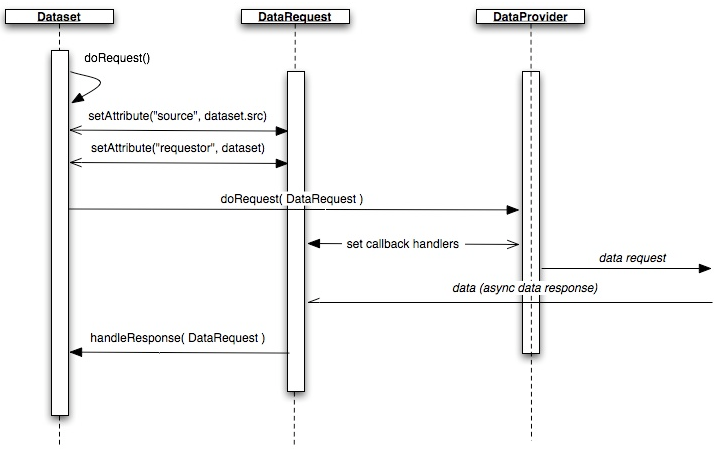

A dataprovider (DataProvider) specifies the transport mechanism and policies for communicating data requests from the client to the server. For example, dataproviders may batch requests, whitelist/blacklist URIs.
Datasets make data requests through dataproviders. The transport mechanism is abstracted away from the dataset. That is, a dataset could use a dataprovider that uses HTTP in one instance, and then swap out to another dataprovider that uses XMPP as its transport as long as the dataprovider can support the dataset's request.
A dataprovider must implement this interface:
interface DataProvider { function doRequest(
dataRequest : DataRequest ); }Callers of the dataprovider invoke
doRequest()with a DataRequest object. A
datarequest instance implements a DataRequest interface with
which a dataprovider can make a data request on behalf of the
caller.
The interface for DataRequest looks like this:
interface DataRequest { var requestor : Object;
var src : String; var timeout : Number; var status : String;
var onstatus : Event; var error : String; var rawdata : String;
}requestor: An optional property that's the object
using the DataRequest to pass into the dataprovider's
doRequest method.
src: A URI, like
"http://host.com:80/path?query=value" or "ftp://". A
dataprovider may support only a certain set of
protocols.
timeout: The length of time that the request should
be made before the request should be aborted.
status: A read-only attribute which can be one of
"ready" (default), "success", "error", "timeout".
onstatus: The event sent whenever the status
changes. The event SHOULD be sent with the DataRequest
instance.
error: Error messages from the dataprovider are
stored here.
rawdata: The raw data received from a server.
In addition to the current dataset API:
class Dataset { var dataprovider :
DataProvider; var multirequest : Boolean; var datarequest :
DataRequest; var datarequestclass : String; function doRequest(
dataRequest : DataRequest ); function handleResponse(
dataRequest: DataRequest ); }dataprovider: The dataprovider which will handle the
dataset's request.
multirequest: True if multiple sequential requests
can be made without overriding previous requests. Default
is false for backward compatibility.
datarequest: The current datarequest instance to be
used by the dataset to call the dataprovider with. Other
methods like setQueryParam() and setSrc() set properties
of dataRequest.
datarequestclass: The default datarequest class to
be used by the dataset.
doRequest: (DataRequest) behaves the same way as
the previous doRequest except a DataRequest instance may
be passed in. If passed in, the dataRequest param is used
to call into the dataprovider, otherwise the dataset's
dataRequest instance is used.
handleResponse: (DataRequest) the callback handler
for doRequest().
The request life cycle begins with the
dataset.doRequest() method. In doRequest(), a DataRequest
instance is generated to call into the dataprovider with.
Before the dataprovider is invoked, the DataRequest is filled
in with enough data for the dataprovider to handle the request.
In turn, the dataprovider sets a data callback on the
DataRequest instance and then, using request information
provided by the DataRequest, makes a server data request. When
the server responds, the callback handler of the DataRequest
instance is invoked, which then calls the calling dataset's
handleResponse method.
